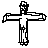
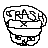
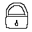
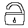
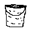
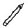
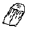

?
Select

Create

Delete

Lock

Unlock
Undo
Redo

Fill

Pencil

Eraser
Colors
Settings
×
New molecules
Size:
150
Shape (also changes the selected molecule):
● Circle
▲ Triangle
♥ Heart
★ Star
● CIRCLE
● CIRCLE
▲ TRIANGLE
♥ HEART
★ STAR
Behaviour
Merge strength:
1.5
Sound reaction:
20
Sound affects shape
Show camera video
All molecules
Lock
Unlock
Clear
Export
With background
PNG image
Record video (30 sec)
≡
Loading...
×
Gestures
Retry
Got it
Gestures
Editor
Colors
⋮⋮ drag to move
×
Color:
Current color - click to pick any
Fill mode:
Both
Interior
Edge
Effects:
Emboss
Micro-stripes
Color 1:
Color 2:
Width:
2
px
Spacing:
3
px
Pencil:
Thickness:
3
px
Smart eraser (deletes whole)
Clear all pencil
Canvas background:
File
✖